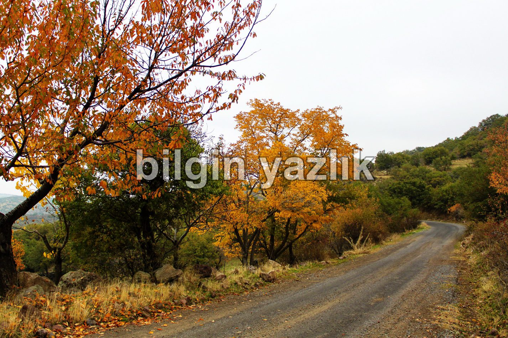
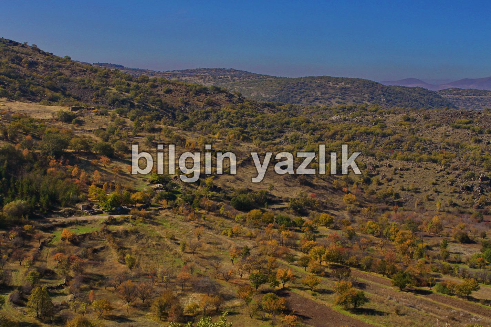
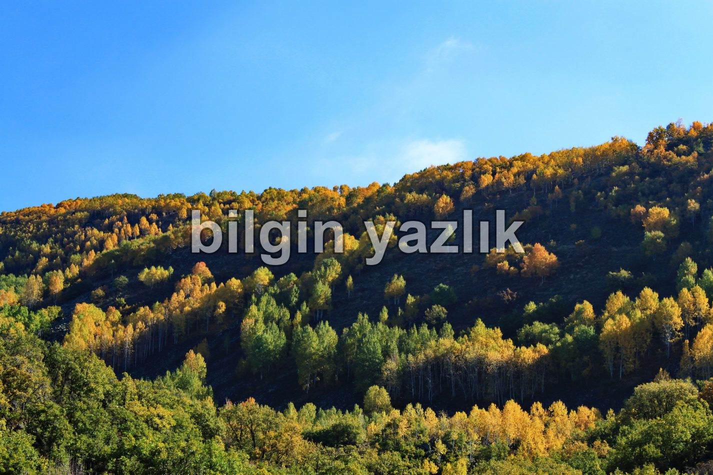
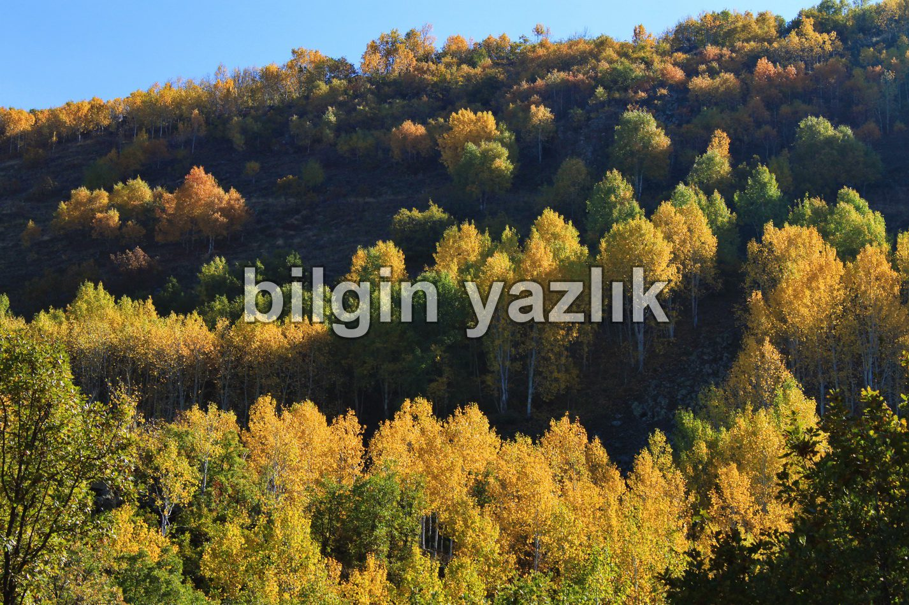
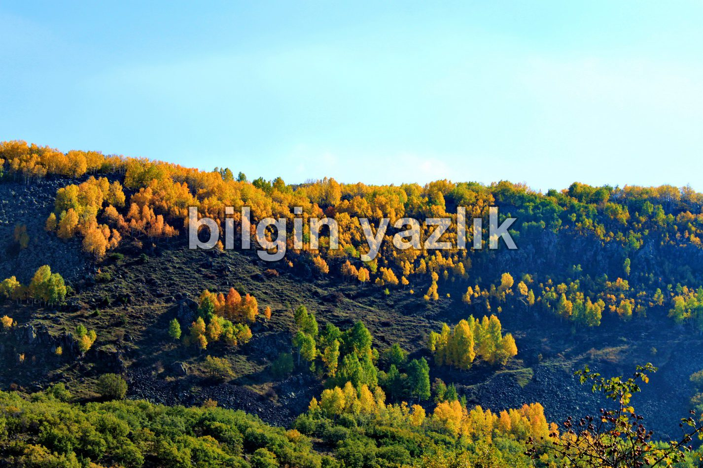
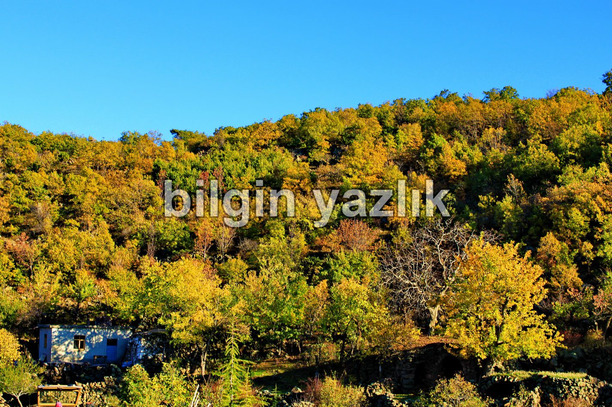
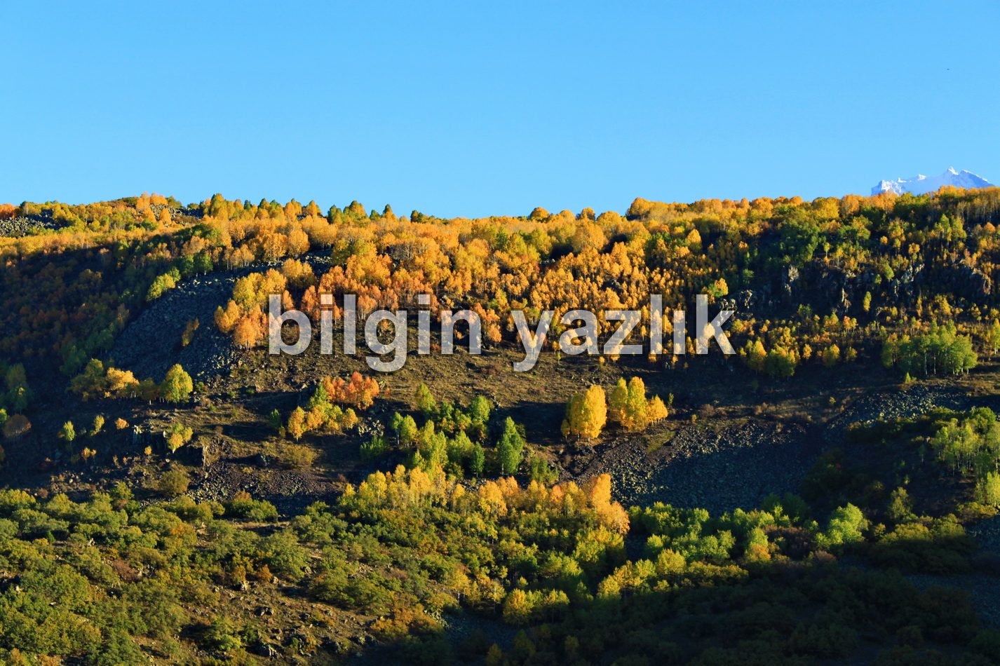
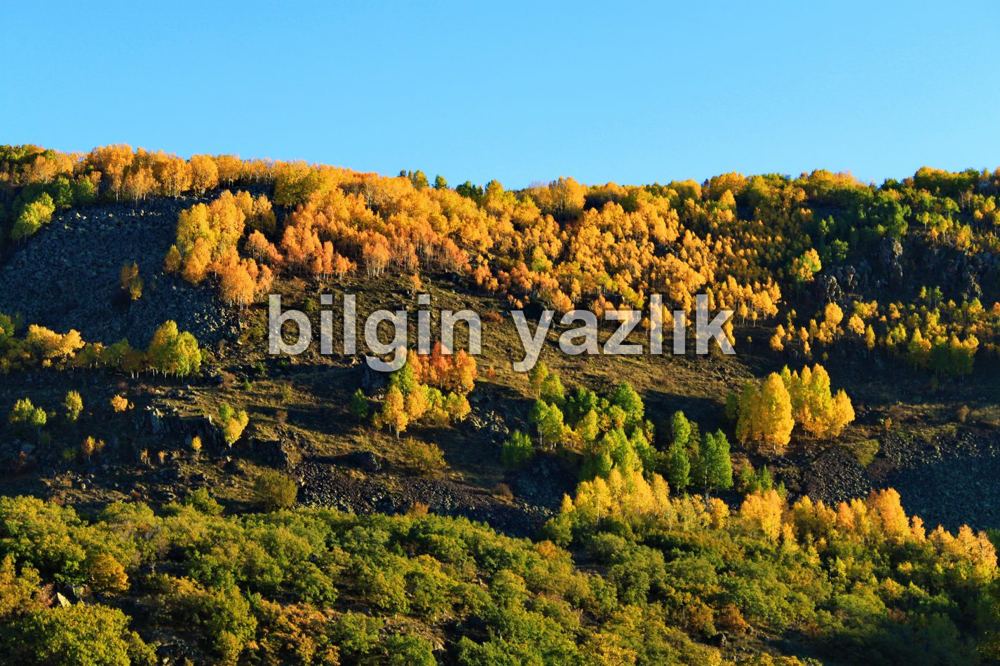
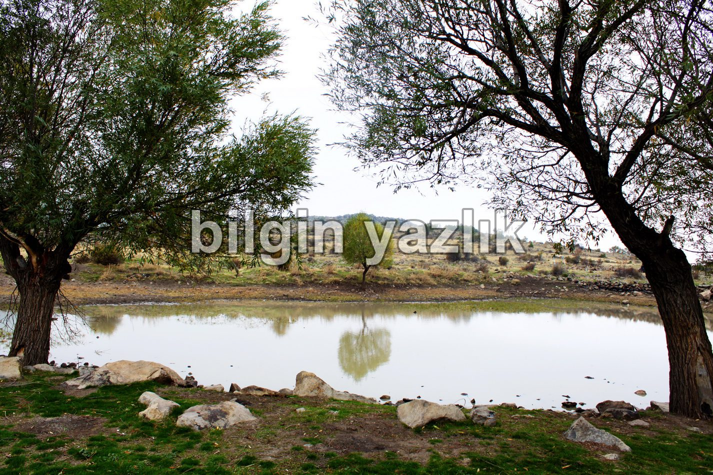
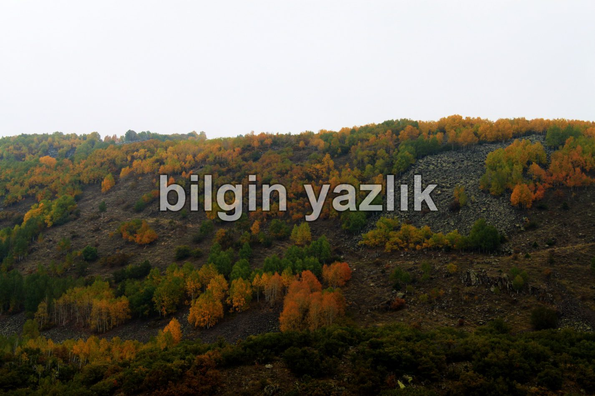

Sakar Çiftliği – Kızılören Yolu
Evet, bu yazımda size bir yoldan bahsedeceğim. Bu yolu yazmaya değer kılan şey, Kayseri’de görmeye alışkın olmadığımız kadar çok ağaçla dolu bir ormanın ortasından geçiyor olması ve küçük de olsa bir gölcükle el ele tutuşması.
Öncelikle yola nasıl ulaşacağınızı tasvir edeyim. Sakar çiftliği bölgesinde yer alan büyük bir köpek çiftliği var, bu çiftlik yolun başlangıç noktası oluyor. Yol aşağı yukarı 10 km uzunluğunda ve sonunda Kızılören köyü daha sonra da İncesu bulunuyor. Yolun tamamı asfalt, fakat kondisyonunun iyi olduğunu söyleyemem, özellikle yağışlı dönemlerde çok dikkat etmek gerekiyor.
Yol boyunca size gözlerinize inanamayacağınız bir orman eşlik ediyor, Kayseri’nin böylesi ormanlara ev sahipliği yaptığına gözlerimle görmesem inanmazdım. Ormanda ağaç çeşitliliği çok fazla değil, genel itibarla kavak ve meşe ağırlıklı bir ağaç nüfusu var. Bölge Erciyes’in batı eteklerine yayılmış durumda ve hayvan çeşitliliği de Kayseri geneline nazaran oldukça iyi durumda. Ormanda yaban domuzlarının, kokarcaların, sincapların, kurtların ve söylentilere göre vaşakların yaşadığı bilinmektedir.
Bölgede yer alan köylüler yaban domuzlarından şikayetçiler, domuzların ekinlerini talan ettiğini iddia ediyorlar ve sık sık domuz avına çıkıyorlar. Köylüler genelde hayvancılıkla uğraşıyorlar ve hayvanlarını bu ormanlarda otlatıyorlar, yol boyunca çok sayıda sürü görmek mümkün.
Aşağıda fotoğraflarını da göreceğiniz üzere yol üzerinde bir de küçük bir göl var. Gölde yaz kış mutlaka su oluyor ve içerisinde balık yaşıyor. Suyun birikme yoluyla toplandığını düşünüyorum. Rengi tamamen çamursu olan gölün çevresinde iki bağ evi var. Piknik yapmak ve ciğerlere oksijen doldurmak için mükemmel bir yer. Sırtınızda ormanlar, önünüzde göl, yanınızda mangal, daha ne olsun.










Bu yazı taliyol arşivinden taşınmıştır. · özgün kayıt